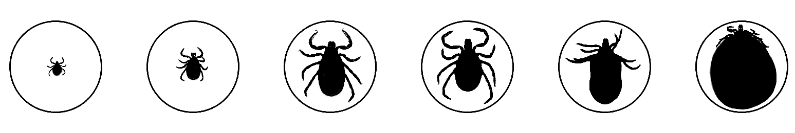

Hi! this is Luke, in Williamstown. I want to invite you to collaborate with me on something:I'm going to be printing a free tabloid (broadsheet / mini-newspaper / etc) this summer. It will be double-sided 11" x 17", I will print them as often as I can, using Riso water-based color printing. I will distribute them around Williamstown (and maybe beyond?). I am thinking to call this tabloid Tick Check; it is both a tongue-in-cheek joke and very serious, and it is about being vigilant.
I am thinking of Tick Check as a way to process the information-filled world, through attention to matters of local concern. I don't know how to hold the range of questions I have in my head! What questions do you have?
Please send any questions, poems, cartoons, hearsay, sketches, charts, missed connections, maps, jokes, tips, facts, critiques, announcements, public secrets, lists, warnings, links, call-outs, special wishes, etc that you would like to see printed. Nothing is unprintable.
Some rough guidelines:
- Text: 500 words or less (one or two words is also ok, we can print these words big! If longer than 500 words: serialized / split into multiple chapter chunks is ok!)
- Image: Black and white, 6" x 6" or smaller (300dpi if digital)
- You can be credited or anonymous / pseudonymous, as you like.
You can upload digital materials here or hand me physical materials (I am happy to scan).
Also... Would you be interested in joining me in editing? researching? printing? distributing? outreach? I would love close collaborators. Please let me know!
Also... I don't really know how to reach many of the people in this area, unless we run into each other - will you please let everyone know that this invitation is for them too?
I can be reached at: info@tick-check.com or call 217-4012
You can find information about tick-borne illnesses here
Thank you!